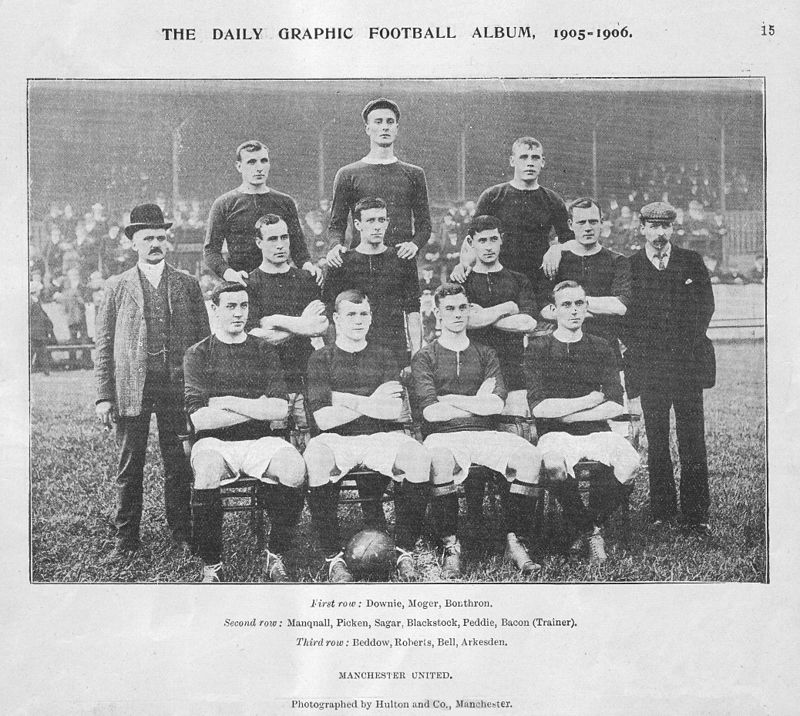
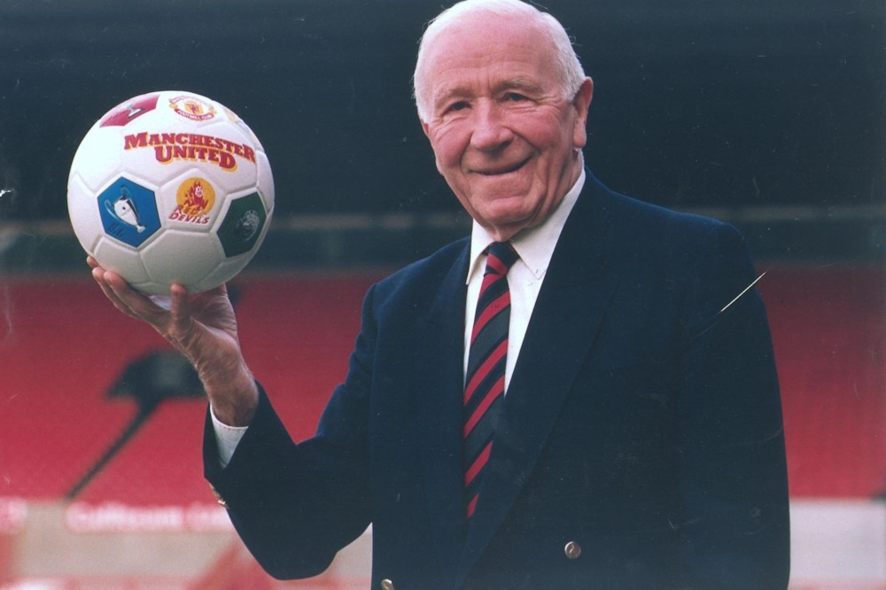
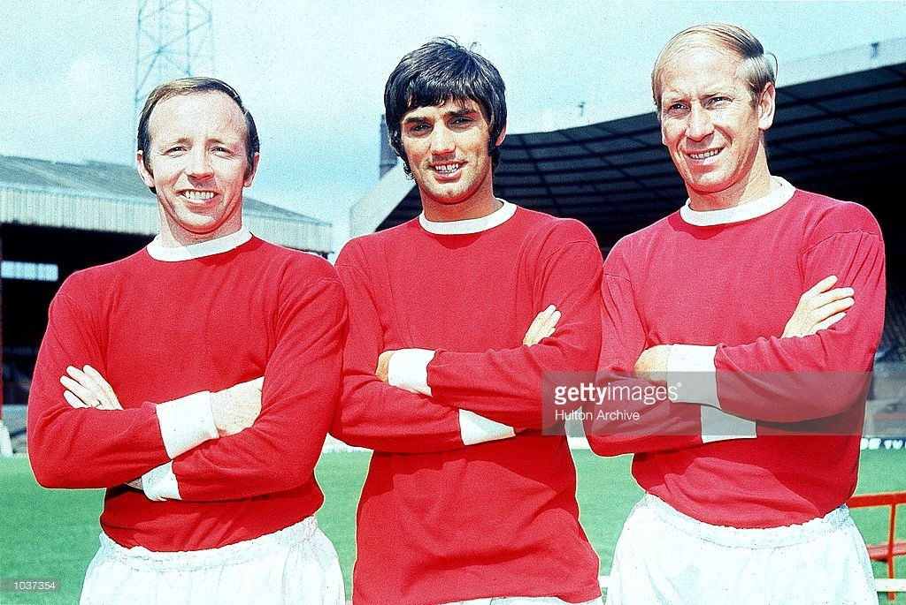
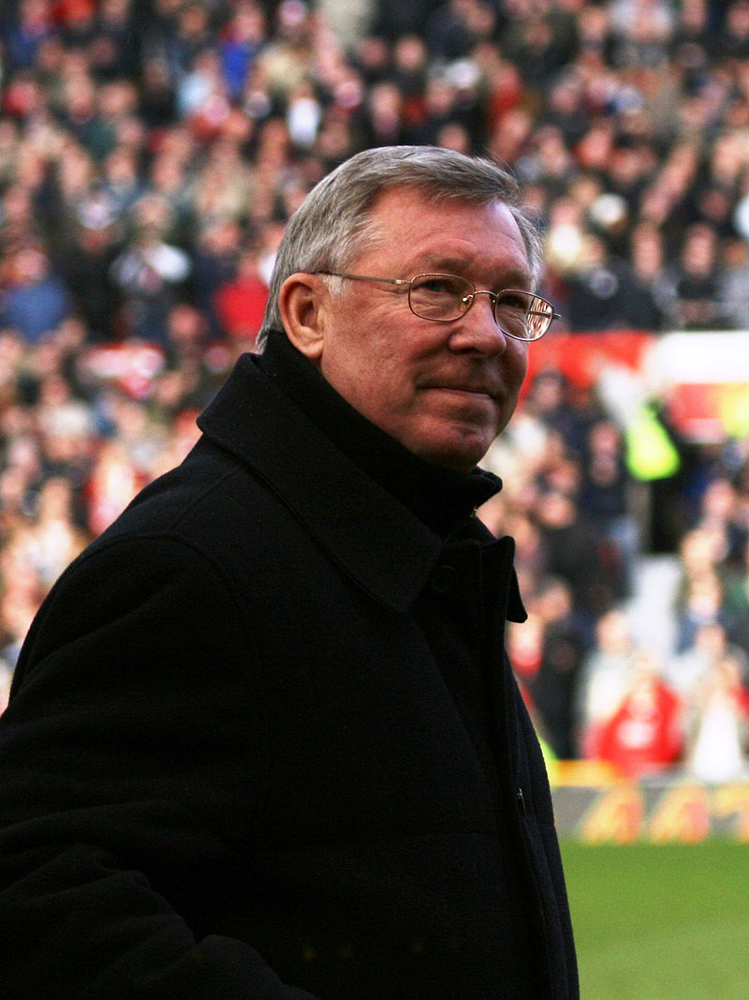
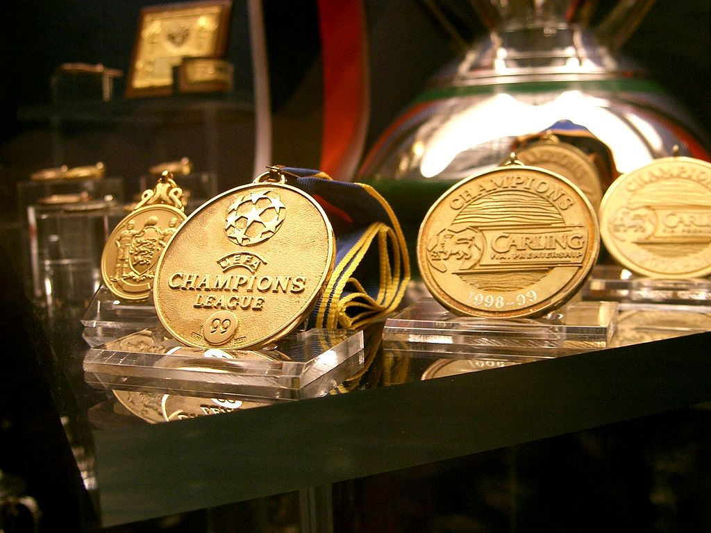

맨유의 역사는 1878년 랭커셔 요크셔 철도의 뉴턴 히스 지부 실업팀인 뉴턴
히스 LYR F.C.(Newton Heath LYR F.C.)의 설립으로 거슬러 올라간다.
유니폼은 지금과는 달리 녹색과 노란색을 좌우 대칭으로 넣은 유니폼이었다.
1892년 철도 지부와의 관련을 끊고 “Newton Heath F.C.”로 명칭을 변경,
독립적인 클럽으로 변모하였고, 풋볼 리그(The Football League)에도
참가하였다. 1902년 2500파운드의 부채로 인해 클럽이 위기에 빠졌는데, J.
H. 데이비스의 투자로 다시 일어날 수 있었다. 전해지는 이야기에 따르면,
당시 클럽의 주장인 해리 스태퍼드가 그의 애견 세인트버나드를 기금 모금
행사에서 자랑했고 데이비스는 개를 사기 위해 스태퍼드에게 접근했다.
그러나 클럽의 주장은 제안을 거절했고 대신 데이비스가 클럽에 투자하기를
설득했다고 한다. 한편, 클럽의 명칭과 관련하여 “맨체스터
센트럴(Manchester Central)”과 “맨체스터 셀틱(Manchester Celtic)”이
제안되기도 했는데, 이탈리아계 후손인 루이스 로카(Louis Rocca)가 맨체스터
유나이티드를 제안해 그것으로 결정되었다. 1902년 4월 26일 맨체스터
유나이티드로의 개명이 확정되었다. 데이비스는 기존 유니폼의 색인 녹색과
금색 대신에 붉은색과 흰색으로 바꾸었다.
1945년 맷 버즈비가 감독으로 선임되었다. 그는 등장하면서부터 자신의 선수
선발권 및 선수 이적, 훈련 방법 등에서의 권한을 요구하였다(그가 바로
직전에 머물렀던 리버풀에서는 이런 요구가 묵살되고 해임되었다.). 맨체스터
유나이티드는 그의 주장에 동의하고 그에게 권한을 맡기었다. 버즈비가
성사시킨 첫 계약은 선수가 아니라 수석 코치 지미 머피였다. 1947, 48, 49년
2위를 차지하고 1948년에는 FA컵을 우승하는 등 상당한 성적을 거두었다.
버즈비는 클럽이 육성하고 있는 유스 팀 선수들에 주목했고 1956년에 팀 평균
나이가 불과 22세밖에 되지 않았음에도 시즌 103골로 리그 우승을
차지하였다. 어린 선수를 중용하는 정책은 클럽 역사의 전환점을
가져다주었고 이 선수들을 ‘버즈비의 아이들’(Busby Babes)이라고 불렀다.
버즈비는 버즈비의 아이들과 함께 공격 축구로 맨체스터의 팬층을 확고하게
구축했다. 하지만 어느날 비극이 찾아왔다. 1958년 2월 6일 뮌헨 비행기
참사가 발생했다. 이 사고로 선수 8명과 코칭스태프를 포함해 총 15명이
사망하였다. 버즈비 감독도 비행기에 탑승하여 심각한 부상을 입었으나
구조되었다. 7명의 선수는 사고 당시 사망했고, 중상을 입은 선수 한 명은
2주일 후에 병원에서 사망했다.


사고 이후에도 맨유는 유러피안 컵을 포기하지 않았다. 부상중인 버즈비를
대신에 지미 머피가 임시 감독직을 맡아 대회에 참가했고 맨체스터는 결승전
까지 올랐다. 1960년 초반 버즈비는 팀을 다시 정비했고 젊은 선수 육성에
주력했다. 이 당시 등장한 세 명의 레전드가 데니스 로(1964년 발롱드르
수상), 바비 찰튼(1966년 발롱드르 수상), 조지 베스트(1968년 발롱드르
수상)다. 오히려 사고 이후, 1960년대를 버즈비 시대라고 할 만큼 맨유는
괄목할 만한 성장을 해냈다. 맨체스터의 골든 트리오들을 이끌고 버즈비는
뮌헨 비행기 사고 딱 10년째인 1968년, 유러피안 컵 벤피카를 4:1로 꺾고
드디어 유러피언 컵을 들어올렸다. 잉글랜드 클럽 사상 최초 우승이었고
맨유가 뮌헨의 사고를 이겨냈다는 상징적인 의미이기도 했다. 다음 해,
1969년 버즈비는 감독직에서 물러 났고, 맨유는 암흑기에 들어서게 된다.
버즈비의 후임으로 윌프 맥기네스가 감독을 맡았으나, 실망스러운 성적을
내면서 버즈비의 공백을 매우지 못했다. 사임했던 버즈비는 6개월간 돌아와
팀을 잠깐 맡기까지 했다. 1972년, 토미 도허티(Tommy Docherty)가 감독을
맡았고 위기의 맨유를 구하긴 했지만 인간적으로서도 실망스러운 모습을
보여주었다. 1974년 맨유는 강등되었지만 곧바로 1부리그로 복귀했으며,
그럭저럭 대중적인 성공을 거두었다. 하지만 감독인 도허티는 언론에 팀
선수의 탓을 하고, 물러날 때는 맨유까지 욕하는 모습을 보여주었다. 이후
단임 감독들이 계속 오갔지만, 버즈비를 대신할 감독을 찾지 못했다.
1986년 알렉스 퍼거슨은 애버딘에서 맨체스터의 감독으로 왔고, 앳킨슨의
뒤를 이어 맨체스터 유나이티드 감독직에 올랐다. 그의 첫 시즌 성적은
11위였다. 다음 시즌인 1987-88에는 2위라는 성적을 거두었고 브라이언
매클레어(Brian McClair)가 조지 베스트 이후로 오랜만에 시즌 20골을
달성했다. 그러나 다음 두 시즌 유나이티드의 성적은 좋지 않았고 팬들의
기대는 충족되지 않았다. 1990년에는 해임 위기에까지 몰렸다는 이야기도
있었지만 크리스털 팰리스를 FA컵에서 꺾고 우승을 차지했다. 1990-91에는
유러피언 컵 위너스컵에서 스페인 챔피언 FC 바르셀로나를 누르고 우승을
차지했다. 그러나 다음 시즌에는 실망스러운 결과로 리즈 유나이티드에
리그를 내줬다. 한편, 1991년에 런던 증권거래소에서 4700만 파운드의 주식
평가를 받아 대중의 이목을 끌기도 했다. 1992년 11월 에릭 칸토나의 합류로,
맨체스터 유나이티드에는 활기가 돌았다. 라이언 긱스를 비롯한 폴 인스,
데니스 어윈, 개리 팰리스터와 함께 1992-93 시즌 우승을 이끌어 1967년
이후로 26여 년 만에 리그 우승컵을 들어 올리는 기염을 토했다. 노팅엄
포레스트(Nottingham Forest)로부터 이적해 온 로이 킨의 활약으로 1993-94
시즌에 최초로 리그컵과 FA컵을 동시에 들어 올리는 더블을 달성하였고, 로이
킨은 주장 자리에 올랐다. 그러나 1994년 1월 20일 과거 맨유에 영광을
안겼던 버즈비가 사망, 맨체스터 유나이티드는 슬픔을 맛보기도 했다.


맨유는 1999년 캄프 누의 기적으로 트레블을 따낸 후 유럽 축구 역사에
정점에 이르게 된다. 셰링엄의 동점골과 솔샤르의 역전골로 굳건했던 뮌헨을
무너뜨리고 맨유는 챔스 우승컵을 들어 올렸고 급기야는 유리펀 트레블을
달성하는 사상 최대의 대업적을 이룩했다. 퍼거슨은 맨체스터 유나이티드
뿐만 아니라 잉글랜드의 축구 위상 자체를 세계 최고로 끌어올렸다. 맨체스터
유나이티드에서 더 나아가 EPL을 상징하는 인물이다. 1999년 맨유의 트레블은
맨유 우승만이 아니라 잉글랜드 리그를 침몰에서 다시 구해놓은 역사적인
사건이기도 하다. 영연방 엘리자베스 2세 여왕은 퍼거슨이 들어올린 것은
트로피가 아니라 영국의 자존심이라고 말했으며, 그에게 기사 작위를
수여했다. 모든 스포츠가 그렇겠지만 EPL에서 축구 감독의 목숨은 파리
목숨보다 짧다는 얘기가 있다. 2006년 영국 워릭 경영대학원(Warwick
Business School)에서 발표한 보고서에 따르면 1992년부터 2005년까지
잉글랜드 감독들의 평균 재임기간은 약 2년이었다. 허나 퍼거슨 감독은 무려
27년간 재임하고, 성공신화를 썼다.
Manchester United Football Club